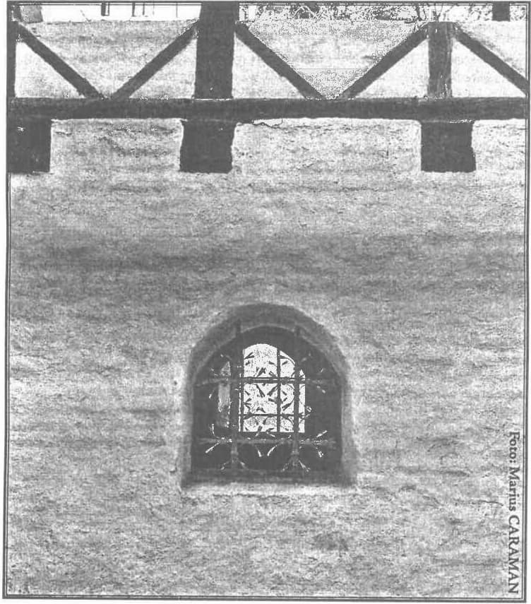

Prea cuvioase părinte stareț,
Cuvioși părinți,
Iubiți credincioși,
Am venit de departe la acest praznic al Adormirii Maicii Domnului cu bucuria în suflet că voi asista la sfînta liturghie de la Mânăstirea Petru Vodă încununată cu predica, atât de așteptată și de dorită de dumneavoastră toți, a părintelui stareț Justin. Iată însă că Sfinția Sa a găsit de cuviință să pună pe umerii mei nevrednici sarcina de a vă vorbi eu despre frumusețea și însemnătatea marii sărbători care ne-a adunat pe toți aici, în acest sfînt lăcaș de trăire și simțire românească, ortodoxă. Pentru mine, această postură cu totul neașteptată este momentul cel mai înălțător, mai presus de orice închipuire a mea, cu care bunul Dumnezeu mă răsplătește mult peste ceea ce aș fi putut gândi că mi se cuvine. Trag nădejde să nu dezamăgesc pe nimeni cu cele ce are a vă spune despre Maica Domnului nu un teolog, ci un profesor de limba română…
Multe se mai pot spune despre Sfânta Fecioară Maria, despre rolul și însemnătatea Maicii Domnului pentru edificarea noastră sufletească, a tuturor creștinilor. Eu am să mă opresc asupra unui subiect oarecum bine cunoscut dumneavoastră, dar asupra căruia, ca și mine, nu v-ați oprit niciodată să insistați și să-l analizați sub toate aspectele sale. O vom face acum, împreună, întrebându-mă ce poate să însemne vestita proorocire potrivit căreia România va deveni cândva „grădina Maicii Domnului”. Avem toate motivele să ne aplecăm asupra ei și să o cercetăm cu toată seriozitatea.
Procedând metodic, va fi să ne punem câteva întrebări și să căutăm cu bună credință răspunsul cel mai potrivit, mai adecvat. Prima întrebare care se naște în mintea noastră este următoarea: Ce motive avea Maica Domnului să ne aleagă pe noi, românii, pentru această onoare? Ce anume o putea face pe Sfînta Fecioară să ne răsplătească cu atâta generozitate? Merităm noi, românii, atâta grație divină? Care sunt faptele părinților și strămoșilor noștri pentru care Maica Domnului ne hărăzește un destin aparte? Atât de deosebit?
….Vă împărtășesc din capul locului părerea, convingerea mea, ca bun cunoscător al istoriei Neamului Românesc, că nu sunt puține faptele românilor care cu siguranță au plăcut mult dinaintea Maicii Domnului. Voi enumera numai câteva, cu precizarea, iubiți credincioși, că acestea sunt fapte pentru care fiecare dintre noi trebuie să se simtă mândru și fericit că este român, și să mulțumească lui Dumnezeu că s-a născut român, pe aceste meleaguri binecuvîntate. Fac această precizare deoarece azi, noi, românii, prea suntem din toate părțile atacați, agresați în demnitatea noastră de români, asaltați de neprieteni preocupați a slăbi și distruge temeiurile încrederii noastre în viitorul românesc, doar-doar ne vom lepăda de românismul nostru, funciar și fără de leac! Vă va fi mai ușor să rezistați acestor presiuni perfide și veți avea ce să le răspundeți obraznicilor, știind cele ce urmează.
Așadar, voi încerca să fac un scurt inventar, un pomelnic al câtorva dintre faptele și împrejurările prin care noi, românii, ne-am singularizat în istorie, deosebindu-ne de alte neamuri prin gesturi care vor fi atras asupra noastră atenția și milostivenia Fecioarei Maria.
Încep cu Sfîntul Andrei, pentru care, dintre apostoli, e de crezut că Maica Domnului a avut un plus de iubire și prețuire, doar a fost primul dintre oameni care a recunoscut în Iisus esența divină a făpturii și a făptuirii sale. Iar în faptul că apostolului Andrei i-a revenit misiunea de a duce cuvîntului Domnului în ținuturile dunărene am putea vedea un semn, căci cuvîntul său a rodit și a dat naștere unuia dintre puținele popoare creștinate încă din acele timpuri apostolice. Nu avem nici un document scris despre cum a fost primit Apostolul Andrei de strămoșii noștri daco-geți, dar avem documentul lingvistic, mărturia limbii române, care a păstrat amintirea sfîntului apostol prin denumirea Indrea sau Ândrea, dată în popor lunii decembrie, luna în care este prăznuită nașterea Mântuitorului, adică Începutul! Avem dreptul să deducem din acest cuvînt, Ândrea, veritabilă nestemată a limbii române, că strămoșii noștri l-au iubit și cinstit pe Apostolul Andrei așa cum se cuvenea. Suntem singurul popor creștin care păstrăm amintirea creștinării noastre prin tradiția vie a graiuluii străbun, tradiție de două ori milenară! Mai veche decât amintirea lui bădița Troian, a împăratului Traian întemeietor de Ţară, este amintirea sfîntului Ândrea, întemeietor de viață sufletească nouă! Amintire păstrată nu prin texte scrise, aflate în biblioteci sau sipete, ci prin cuvîntul viu și roditor în sufletul fiecărui purtător al graiului românesc.
Un alt moment de istorie românească pe care Maica Domnului negreșit îl cunoaște este martiriul Brâncovenilor. Este mare păcat că acest episod glorios din istoria românilor și a creștinătății nu este nici pe departe atât de binecunoscut cum ar merita să fie în toate zările lumii!
Mai întâi v-aș invita să încercați a vă imagina ce a fost în mintea sultanului care l-a pus pe Vodă Constantin Brâncoveanu să aleagă între credința sa în Iisus și viața sa și a celor cinci feciori ai săi. Acel nevolnic de sultan atotputernic era ferm convins că Brâncoveanu va ceda, că voievodul român se va lepăda de credința străbună și va trece la religia musulmană. Era atât de sigur încât a făcut un veritabil spectacol din acest moment al renunțării la Iisus Hristos și i-a invitat să asiste la biruința Islamului asupra Crucii pe toți ambasadorii de la Constantinopol, majoritatea reprezentanți ai unor state europene, creștine. A convocat, cum am spune noi azi, toată mass media, toate televiziunile, pentru un „show” cum nu se mai văzuse. Mai mult, ca batjocura să fie deplină la adresa creștinătății și a Domnului nostru Iisus, a fost aleasă ca zi a acestui moment de rușinare a creștinătății însăși ziua de 15 august, adică ziua Sfintei Marii, a Adormirii Maicii Domnului. Intenția sultanului de a lovi astfel în inima credinței creștine se făcea și mai limpede.
Știm cu toții ce a urmat. Constantin Vodă Brâncoveanu și feciorii săi domnești au stricat petrecerea păgânului și a invitaților săi, românii de ei nu au abjurat, nu s-au lepădat de Iisus Hristos și nici de Maica Sa. Au murit pe rând decapitați, ultimul pierind Brâncoveanu după ce a asistat la uciderea copiilor săi… O asemenea tragedie, un asemnea martiriu nu se mai cunoaște în toată istoria întregii creștinătăți, a întregii omeniri, indiferent de religie… Am mai spus-o: din păcate nu ne arătăm vrednici să cinstim cum se cuvine amintirea și pilda acestui moment de excelență românească și creștină.
Vom înțelege mai bine valoarea martiriului brâncovenesc întrebându-ne ce s-ar fi întâmplat dacă Vodă accepta să se turcească, dacă Vodă ar fi cedat, așa cum mizase sultanul, sultan care credea că îl cunoaște bine pe Brâncoveanu, căci Brâncoveanu nu era un ascet, un mistic, un om cu aspirații la sfințenia vieții sale, ci era un om de lume, era foarte bogat, îi plăceau petrecerile, hainele scumpe, mâncarea bună, vinurile alese, băute mai ales în muzici lăutărești vestite în toată Europa. La curtea sa era multă eleganță și rafinament de influență italiană, florentină, plăcerile vieții erau prețuite și cultivate. Nici măcar o clipă sultanul nu se îndoise de scenariul său mizer!
Și răspund la întrebarea pusă: dacă Brâncoveanu s-ar fi lepădat de credința sa, asta ar fi însemnat o pată de rușine pe obrazul întregii creștinătăți, dar mai ales pe obrazul nostru, al neamului românesc, căci ar fi pus pe noi stigmatul veșnic al lașității, al inconsistenței și superficialității sufletești la nivel etnic, și ar fi făcut de ocară numele de român pentru toți vecii!
…Insist asupra faptului că nu am fost vrednici să-l cinstim cum se cuvine pe marele voievod, dar totodată afirm convingerea mea că acolo sus, în tăriile cerului, Maica Domnului s-a cutremurat de puterea credinței Brâncovenilor, a lăcrămat pentru cumplită durerea mamei care are de dus la îngropăciune cinci feciori în floarea vârstei, în pârgul anilor lor tinerești! Cunoștea bine Maica Domnului această durere… Care va fi fost atunci a întregului neam românesc.
Aceleași, ale mamei de la al cărei sîn moartea smulge feciorul cel drag, sunt și lacrimile vărsate de măicuța cea bătrînă, cu brîul de lînă, care îl caută pe mândrul ciobănaș mioritic. Îi aud pe mulți folosind azi anapoda cuvîntul mioritic, prin comportament mioritic înțelegând ei, prostește, că ar fi vorba de lipsa voinței de a te apăra, de a răspunde cu bravură și curaj provocărilor vieții. Comportamentul ciobănașului are un sens mult mai adânc, dinaintea morții el vede și mai bine cât de frumoasă este lumea de care a avut parte, perspectiva morții dă valoare și mai mare capacității de a te bucura de viață! Comparați comportamentul ciobănașului mioritic, al românului pot zice, cu textul evanghelic, textul despre reacția lui Iisus când află că a sosit ceasul trădării, ceasul când va fi dat morții nelegiuite. Ce face Iisus? Nu părăsește locul, nu se depărtează de cei care îi vor moartea, nu se ascunde, nu fuge, nu încearcă „să scape”, nu scoate sabia!, ci își adună învățăceii și le ține ultima și cea mai cutremurătoare prelegere, predica cea mai lungă și mai cuprinzătoare, încununată prin teribila rugăciune a lui Unu, pentru unitatea om-Dumnezeu. Este mare asemănarea dintre comportamentul hristic și cel mioritic! Sunt convins că Maica Domnului va fi aflat cu mare mângâiere a sufletului povestea oiței năzdrăvane și se va fi înduioșat de suferința măicuței de ciobănaș, minunându-se ce neam de oameni sunt cei care au făcut din această poveste oglinda sufletului lor… Căci să nu uităm că în Maica Domnului oamenii, creștinii, și în mod special românii, o văd nu numai pe mama Domnului, ci însăși esența maternității, mama eternă, a fiecăruia dintre noi.
La aceste cuvinte, gândul mă duce spre Mihai Eminescu. Și nu mi se pare deloc întâmplător că poetul din care noi am făcut eroul național, este autorul unor poezii închinate Maicii Domnului deosebit de frumoase. Nu le cunoașteți, iubiți credincioși, deoarece în școala pe care am făcut-o sub comuniști, ca și în școala de azi, aceste poezii nu sunt puse la dispoziția copiilor noștri. Dar pentru cunoscători este bine știut că dintre miile de poezii închinate Maicii Domnului în toate limbile pământului, în toate marile literaturi ale lumii, poeziile lui Eminescu sunt cele mai frumoase, mai mișcătoare, mai adânc însuflețite de o înaltă trăire creștină.
…Cunoașteți în schimb poezia O, mamă, dulce mamă… Tot cuvîntul dulce îi vine poetului când spune Ce-ți doresc eu ție, dulce Românie?, ceea ce ne îngăduie să conchidem că Eminescu pentru mamă-sa și România nutrea un sentiment identic, concluzie care ne îndeamnă să spunem că în mentalitatea românească a fi bun român presupune să fii și bun creștin. Una fără alta nu se poate!
Profit de ocazie pentru a corecta o informație greșită primită de noi toți în școală cu privire la Mihai Eminescu: Iubiți credincioși, Eminescu nu a murit nebun, atins de o boală rușinoasă, ci a murit cu zile, ca victimă a iubirii sale pentru Ţară, propriu zis ca un martir al credinței într-o soartă mai bună la care neamul său românesc avea dreptul…
Îngăduiți-i dascălului de limba română care vă vorbește ca în „inventarul marilor performanțe sufletești ale Neamului românesc” să introducă un cuvînt, cuvîntul omenie. Azi toată lumea se străduie să învețe o limbă străină sau mai multe. Vă asigur, pe toți cei de față, că în nici una dintre limbile pământului nu o să găsiți un cuvînt echivalent pentru omenie al nostru! Sau pentru verbul a omeni! Cuvîntul om are în limba română o familie de derivate și compuse mai numeroase și mai interesante decât în orice altă limbă! Ce înseamnă asta altceva decât o mai mare dragoste și un mai mare respect la români pentru ființa omului, cea zămislită după chipul Domnului?! Respectul față de om fiind nedespărțit de respectul și dragostea pentru Dumnezeu, pentru Fiul Domnului și Maica Sa preacinstită!
S-ar putea scrie o Istorie a Omeniei Românești… Cu numeroase și variate capitole. Un astfel de capitol ar fi despre cum s-au purtat românii ca învingători pe câmpul de luptă. Cum s-au purtat cu adversarul înfrânt! Ar fi un capitol vast care ar începe cu legendarul Dromichete și ar ajunge la al II-lea Război Mondial, când românii au avut ocazia să demonstreze față de prizonierii ruși sau anglo-americani, față de populația civilă din teritoriile ocupate în Est sau în Vest, cât de autentică și de activă este omenia românească. Însuși Stalin, cât era el de insensibil la suferința umană, a simțit nevoia să se adreseze cu mulțumiri și laude armatei române care, ca armată de ocupație în Ucraina și alte teritorii din Estul Uniunii Sovietice, se purta exemplar de omenos, de creștinește.

În acest sens, aici, în acest sfînt lăcaș și în această zi sfîntă, vreau să pomenesc și să omagiez numele unui mare campion al Omeniei românești, un nume care, din păcate, nu vă spune mult, deoarece guvernanții noștri de ieri și de azi au mari interese să ascundă adevărul despre profesorul George Alexianu. George Alexianu, așa se numea cel pe care mareșalul Ion Antonescu l-a desemnat să administreze Transnistria. Trebuie să știți că la acea dată teritoriul sovietic ocupat de Germania și aliații ei a fost împărțit în 8(opt) guvernăminte. Acestea au fost administrate care de ucraineni, care de polonezi, de germani etc. Printre guvernatori a fost și un român, George Alexianu, guvernator al Transnistriei din 1942 până în 1944, Transnistria însăși fiind administrată de funcționari români, de armata română. Ei bine, la sfârșitul războiului, din dispoziția lui Stalin, toți guvernatorii acestor teritorii ocupate au fost arestați și deferiți tribunalului poporului, cu indicația ca acești guvernatori să primească pedeapsa capitală dacă se va găsi măcar un singur abuz, o singură nedreptate comisă de acel guvernator împotriva populației civile. Din cei unsprezece acuzați, zece au fost găsiți vinovați și ridicați în ștreang la sfârșitul procesului public. Unul singur a fost găsit nevinovat, adică nu s-a aflat localnicul rus sau ucrainean ori evreu care să depună mărturie împotriva acelui guvernator, reclamând un abuz sau vreo nelegiuire. Acel guvernator fără pată și fără de păcat a fost George Alexianu, românul care a făcut atâta onoare neamului românesc și de care azi nimeni nu pomenește așa cum se cuvine ca despre un mare erou al Istoriei Omeniei Românești!
…Contează atât de mult cum îți trăiești viața! Cu farmec și demnitate! Și fiecare popor a dezvoltat un stil de viață etnic propriu, inconfundabil. Dar contează și cum mori! Noi, românii, avem și un fel propriu de a muri, de a trăi cu demnitate și seninătate clipa despărțirii de această lume a aparențelor înșelătoare. La Paris, două românce, au scris o carte intitulată Cum se moare în Carpați. Una dintre autoare este fiica unui român de mare ispravă, Nicolae Bacu, camarad de suferință la Aiud al preacuviosului nostru stareț Justin Pârvu. La Aiud a fost un loc binecuvîntat de Dumnezeu, unde românii care au murit au făcut din moartea lor un moment de triumf al adevărului, al valorilor spirituale eterne, rușinându-i și reducându-i la zero, la neantul neființei, pe prigonitorii lor.
La fel au murit în decembrie 1989 sute de tineri români, ieșiți în stradă fără par, fără pistoale, numai cu brațele goale să înfrunte fiara apocaliptică. Cu noi este Dumnezeu!, au strigat acei copii minunați în fața tancurilor și în fața unei Europe uimite și minunate de disponibilitatea pentru sacrificiu arătată de feciorii noștri! Nu se poate ca sacrificiul lor, al celor mai curați dintre copiii noștri, să nu fi mișcat sufletul Maicii Preacurate, confirmându-i că bună alegere a făcut pentru „locația” grădinii Sale…
Precum vedeți, acestea mai sus prezentate, dar și altele, sunt motive temeinice pentru a face veridică prezicerea referitoare la Grădina Maicii Domnului. Dar vă rog să rețineți că acestea sunt și motive de îmbărbătare a noastră, a fiecărui român, încredințându-ne că avem suficiente motive să fim mândri că suntem români, să fim recunoscători lui Dumnezeu că am avut norocul să ne naștem români! Un noroc mai mare nici că se putea!…
Trec la a doua întrebare. Maica Domnului are de gând să facă din România grădina sa, arătând astfel cât de mult ne iubește!… Dar de la intenție până la faptă mai e de așteptat. Iar deseori, în timp, se pot ivi și motive de răzgândire, de renunțare la proiectul inițial. Cu alte cuvinte, mă întreb, nu cumva există, oferite tot de noi, motive pentru ca Maica Domnului să sufere din pricina noastră, să se întristeze de răutățile și fărădelegile noastre și să-și întoarcă de la noi privirile îndurerate de spectacolul oferit de nevrednicia noastră? Nu cumva suntem noi, românii, nu numai făptuitorii unor isprăvi nemaipomenit de frumoase, ci și făptașii unor crime și uriciuni dezgustătoare, cutremurătoare?
Din păcate avem motive serioase să ne punem și această întrebare: prin care fapte ale noastre s-ar putea să pierdem „simpatia” și milostivenia cerească? Iar răspunsul ne pune în față un lung inventar de păcate bine știute de noi toți.
Un asemenea păcat este legat de tinerii pomeniți mai sus, cei asasinați în decembrie 1989. Peste o mie! Pentru nici unul dintre ei nu a fost pedepsit ucigașul! Or, se știe din vechime că sângele vărsat, mai ales sângele nevinovat, cere, sub amenințarea blestemului, găsirea și pedepsirea ucigașilor. Câtă vreme asasinii nu vor fi pedepsiți, de pe lumea cealaltă sufletele celor morți nu-și pot afla odihna și ne țin sub cumplit blestem! Cum să nu ne meargă rău în această țară în care criminalii, ucigașii acelor copii, sunt bine cunoscuți de toată lumea, dar în loc să-i pedepsim, noi îi răbdăm să-i vedem cocoțați în fruntea bucatelor?! Ba, o dată la patru ani, le mai dăm și votul nostru, liber exprimat! Cum să ne mai iubească cineva când așa de puțin ne pasă de acei copii minunați, de suferința părinților lor?!…
Ţara asta românească a dat nu numai martiri și eroi, ci a dat și mari criminali. Cel mai criminal dintre cei ce au făcut umbră pământului românesc a fost, negreșit, regele sperjur și infam Carol al II-lea. Din dispoziția sa au fost uciși sute de tineri, fruntașii unei generații care a dat omenirii un Mircea Eliade, un Emil Cioran sau Mircea Vulcănescu. Sute de tineri care au fost smulși din familiile lor și fără nici un fel de judecată au fost împușcați și lăsați să zacă în praf și noroi la răscruce de drumuri, ca să se știe cum se pedepsește în România iubirea de neam și de țară, iubirea de Hristos! Pentru aceste crime scelerate regele Carol al II-lea a fost răsplătit de guvernanții noștri post-decembriști care s-au îngrijit să-i repatrieze nevrednicele ciolane și să-l înmormânteze ca pe un mare voievod la Curtea de Argeș, pângărind sfîntul lăcaș cu trupul mâncat de păcatele cele mai grele ale celui mai odios personaj din istoria neamului românesc!
Victimele sale au fost sute de tineri legionari, în frunte cu mândrul lor Căpitan! Despre ei se spun în continuare minciunile și acuzațiile nedrepte cu care Carol a încercat să-și justifice crimele! Nu ne învrednicim să acceptăm adevărul despre viața de jertfă pe care au dus-o legionarii!
…Iubiți credincioși, asupra acestui subiect nu insist decât cu acest detaliu, care trebuie să-l cunoașteți: nu numai Carol sceleratul i-a urît pe legionari! Legionarii au fost urîți de moarte și de însuși criminalul criminalilor: Hitler! Care chiar a încercat să-i asasineze pe legionarii refugiați în Germania în iarna anului 1941. De ce i-a urît Hitler pe legionari? Pentru că știa că legionarii, prin patriotismul lor categoric, necondiționat, și prin creștinismul autentic în care trăiau, puteau să-l împiedice în visul său dement de a face din România o anexă la marele imperiu nazist! Sunt convins că acest detaliu – Hitler i-a urît și i-a prigonit pe legionari!, vă va face să reconsiderați capitolul acesta din istorie și să nu mai vorbiți cu ușurătate despre camarazii lui Mircea Eliade și Petre Ţuțea…
Un alt capitol de istorie neplăcut Maicii Domnului îl constituie crimele comuniste, pe care nu suntem în stare să le identificăm corect și să le pedepsim. Acceptăm minciuna prezidențială care amestecă cele bune cu cele rele, minciuna că regimul comunist criminal a durat din 1944 până în 1989! Ca fost membru al Partidului Comunist Român, din care au făcut parte peste 3 milioane de români, vă asigur că acest partid a avut o politică criminală numai în anii când structurile sale au fost dominate de comuniștii alogeni veniți de la Moscova. În timp și mai ales după 1964 PCR a început să se afirme ca un partid al românilor și caracterul său românesc s-a întărit de la an la an! Pentru această politică, de subordonare a partidului comunist față de interesele naționale, pentru așa zisul său național-comunism, Nicolae Ceaușescu a fost pedepsit de asasinii săi cominterniști cu o moarte cumplită. O moarte și ea nedreaptă, criminală, pe care nicicum nu o legitimau greșelile și păcatele lui Ceaușescu, nu puține, ce-i drept… Rămasă și această crimă nepedepsită!
Însă păcatul cel mai greu cu care am îndurerat inima Maicii Domnului după decembrie 1989 sunt sutele de mii de avorturi la care s-au dedat femeile noastre. Ne va fi tare greu să răscumpărăm vreodată această fărădelege la care femeile noastre au fost și sunt încurajate de o legislație anticreștinească și antiromânească.
Îngăduiți-mi, frați creștini, să vă relatez în acest context o întâmplare pe care o cunosc în chip nemijlocit: este vorba de o fetiță, nepoata unei foste studente, o fetiță de trei anișori. În urmă cu câteva luni, întreaga familie privea la televizor un program muzical. La un moment dat a fost anunțată că urmează să cânte o anume Daria, Daria și nu mai știu cum. La auzul anunțului, fetița de trei ani s-a ițit dintre jucăriile sale spunând: „Pe mine mă cheamă Daria!” Mamă-sa a rămas fără grai câteva clipe, apoi și-a revenit din uluială și a povestit celor de față: când era însărcinată în trei luni a avut o discuție cu bărbatul ei, ce nume să-i pună fetiței? S-au oprit la numele Daria, găsindu-l frumos și potrivit, iar până a doua zi așa au știut că o va chema pe fata lor, Daria. A doua zi s-au răzgândit și s-au decis asupra altui nume, Flavia, cum o cheamă și azi pe fetiță. Ce deducem din această întâmplare? Deducem că în mod certamente sigur există o memorie intrauterină, că în pântecele mamei fătul are o viață sufletească, că este om încă din clipa concepției, iar nu o simplă excrescență anatomică. Deducem că atunci când o femeie avortează de bună voie ea ucide o ființă umană înzestrată cu toate atributele umanității. Să nu ne amăgim că ar fi vorba de altceva!
…Am ajuns și la a treia întrebare pe care o ridică premoniția că în România va fi cândva „grădina Maicii Domnului”… Textul acestei proorociri este nițel ambiguu. Căci ce este România? Am putea spune că România este o adresă. O adresă la care azi locuim noi, românii. Dar, mă întreb, vom mai locui aici și atunci când în România va fi să fie grădina Sfintei Fecioare? Nimic din proorocire nu ne dă asigurarea că în Grădina Maicii Domnului se vor desfăta românii. Facem această remarcă mai ales în măsura în care nu sunt puțini voitorii de bine ai acestei Românii care de ani de zile atrag atenția asupra unui proces declanșat imediat după 1990: de-românizarea României! Diluarea caracterului românesc al României, al vieții pe care o ducem în România, al populației! Sunt câteva milioane bune de români care au părăsit România, în căutarea unei slujbe! Nu au nici un motiv să se întoarcă, dimpotrivă, în România scade mereu oferta unui loc de muncă, șansa unui trai în demnitate!…
Scade cifra demografică prin avorturi, prin practicarea metodelor anticoncepționale, prin descurajarea vieții de familie. Cu ochii mei am văzut o emisiune la televizor despre caravanele medicale organizate de Guvern, trimise prin toate satele, cu dublul scop de a le învăța pe mamele țigănci cum să-și îngrijească copiii pentru a reduce mortalitatea infantilă atât de mare printre țigani, și cu scopul de a le învăța pe femeile românce felurite tehnici contraceptive, adică să le învețe pe românce cum să nu facă copii! Aceasta este înalta menire pe care și-a asumat-o Ministerul Sănătății din România!…
Tot în zilele noastre post-decembriste, pentru prima oară în istorie, în România numărul deceselor este mai mare decât al nașterilor. Se prevede ca, în aceste condiții, pe la mijloc de secol populația României să ajungă la 15 milioane. Dar ne întrebăm, dintre aceștia câți vor mai fi românii? Ne punem această întrebare căci cu prea mare ușurință s-a acordat cetățenie românească la peste un milion de străini! Iar partea tragică este că acești străini au profitat de așa zisa privatizare și s-au făcut stăpâni pe cele mai frumoase și mănoase proprietăți din România. Cele mai importante unități de producție industrială sunt azi proprietate străină. Străinii au venit, dar nu ca să construiască fabrici noi, ci ca să ia pe mai nimic fabrici și uzine ridicate prin sudoarea și truda biet românului. Întinse terenuri agricole sunt azi proprietatea unor străini. Iar faptul că aceste terenuri sunt lăsate de pârloagă, nelucrate, te duce cu gândul la intenții dintre cele mai ticăloase ce se ascund în mintea acestor noi proprietari! În termeni expliciți, ne paște primejdia ca România să fie palestinizată, să cadă victimă unei politici criminale de diminuare și eliminare a elementului etnic românesc!
Iubiți credincioși,
Am fost senator între anii 1992 și 1996. Deseori am avut sentimentul că pierd vremea în Senat și mănânc degeaba salariul plătit de dumneavoastră. Dar în final am reușit să justific prezența mea în Parlament prin strădania pe care am depus-o pentru a împiedica legiferarea vânzării pământului către străini. Mă laud cu această ispravă! Am fost singur la început, dar nu mi-a fost deloc greu să-i dezmeticesc pe ceilalți colegi de partid – eram senator PDAR, sau din alte partide, ca să se întrunească o largă majoritate care a respins propunerea de a se permite străinilor să cumpere terenuri, proprietăți imobiliare.
Din păcate, primul lucru pe care l-a făcut președintele ales în 1996 a fost să repună în discuție modificarea legii și la presiunile sale Parlamentul a votat înstrăinarea pâmântului românesc!…
Oameni buni, când Neagoe Basarab afla că un român și-a vândut moșia părintească unui străin, scotea bani din vistieria țării sau din propria sa pungă și răscumpăra acel pământ! Eu nu-l condamn pe străinul care jinduiește la pământul nostru, ci îl condamn și-l blestem pe românașul nostru, ajuns mare politician, care trădează tot ce are mai sfînt un om și se face unealta dușmanilor noștri! Printre cei care ne guvernează tare mulți s-au făcut în ultimii ani unelte ale străinilor! Ale trădării de Neam și Ţară! Tare mulți…
O altă țintă agresată de inamicii noștri este statul român. Zilnic statul este atacat și acuzat că este un prost gospodar, un proprietar neglijent! Încă un pas și guvernanții noștri ar fi gata să accepte desființarea statului român. Deja statul român și-a pierdut multe din atributele suveranității și ale independenței, iar toată suflarea gazetărească se căznește să demonstreze că acesta este un mare câștig al democrației! Oameni buni, în lume trăiesc câteva sute de popoare, dar marea lor majoritate nu au fost capabile să-și edifice un stat. Statul, statul național îndeosebi, este o mare ispravă a societății omenești. Noi, românii, ne-am învrednicit să ne organizăm în state de sine stătătoare încă din zorii veacului al 14-lea. De atunci și până azi poporul român duce o existență statală neîntreruptă! State cu o vechime neîntreruptă cum este statul român nu mai găsești în Europa decât câteva, le numeri pe degetele unei singure mâini. Mai veche decât statul român este numai Biserica! Biserica a ajutat mult la constituirea statului român și amândouă, Biserică și Stat, au făcut istorie împreună. Legătura dintre Stat și Biserică a slăbit mult în epoca modernă, ca efect, unul din nefericitele efecte ale Revoluției Franceze. Cu gândul la viitorul nostru românesc afirm necesitatea urgentă ca între statul român și Biserică să se întindă noi punți de conlucrare, pentru a anula efectele separării statului de Biserică! Această separare este extrem de primejdioasă atât pentru stat, cât și pentru Biserică! Pentru Neamul românesc!
Iubiți credincioși,
Vă spuneam că Maica Domnului este mama creștinătății, a fiecăruia dintre noi. Vă fac o mărturisire: eu când, copil fiind, priveam acasă icoana Maicii Domnului, aveam impresia că o văd pe propria mea mamă, ținând în brațe pruncul pe care știam că mama îl pierduse înainte de a mă naște eu! Poate de aceea, acum, aici, vorbindu-vă dumneavoastră despre Maica Domnului nu pot să nu mă gândesc la măicuța mea, mai ales că, pentru a vorbi din fața altarului bisericesc canonul mi-a impus onoarea nemeritată de a mă veștmînta în odăjdii bisericești. Sunt convins că din înaltul câmpiilor de verdeață cerești, de unde deseori m-am simțit vegheat și întărit de ochiul mamei, acesta mă cercetează acum cu bucurie și cu sentimentul stenic al împlinirii. Căci biata maică-mea așa mă dorea, preot, să mă fac popă la ea în sat și să mă însor cu… Nu, nu cu Ileana Cosânzeana, ci numai cu moașa satului… Avea mama socotelile ei!
Am și eu o mare bucurie în suflet că am vorbit într-un asemenea loc sfințit de vrednici monahi și preoți, de pelerini ca dumneavostră. Va fi clipa cea mai deosebită din viața mea, oricât de mult aș mai trăi. Mai presus nu se poate.
De aceea vă mulțumesc tuturor, preacuviosului părinte stareț Justin Pârvu, voievodul Ortodoxiei Românești cum atât de inspirat îi zic poporenii, mulțumesc monahilor care m-au acceptat în strană și m-au ajutat să pregătesc această predică, și vă mulțumesc dumneavoastră, pelerini ca și mine la acest sfînt lăcaș, că ați avut răbdare să mă ascultați. Iertare dacă am greșit, iar dacă am spus și ceva bun și frumos, adevărat, lui Dumnezeu să-i mulțumim și Maicii Domnului.
Doamne, ajută!